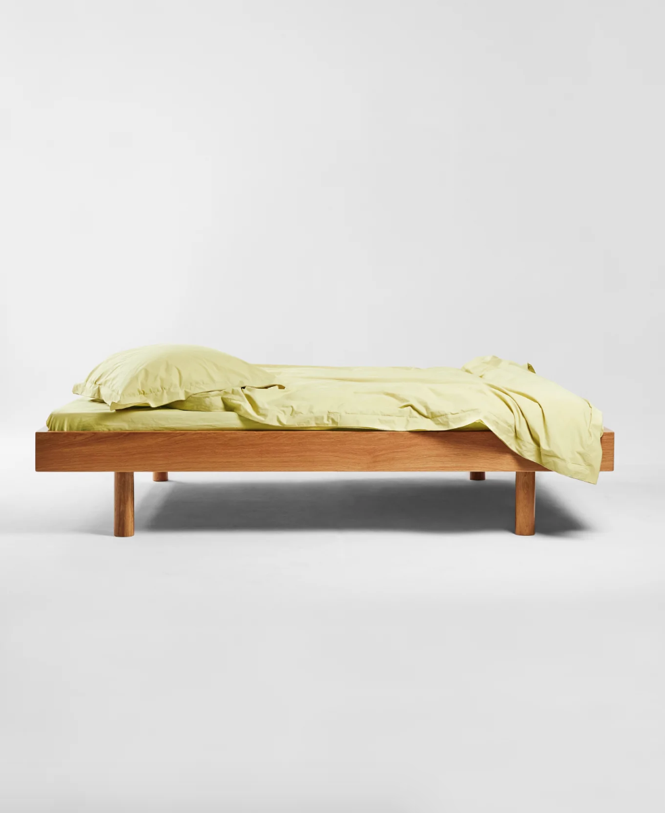
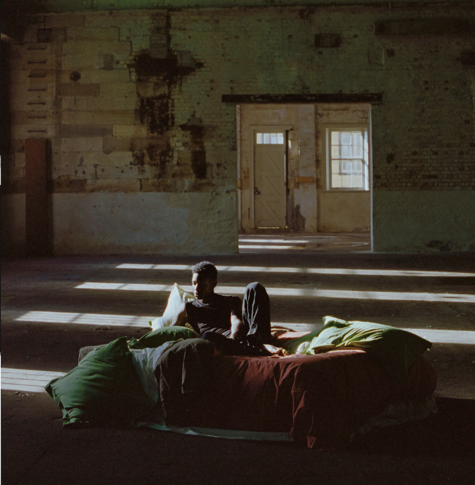
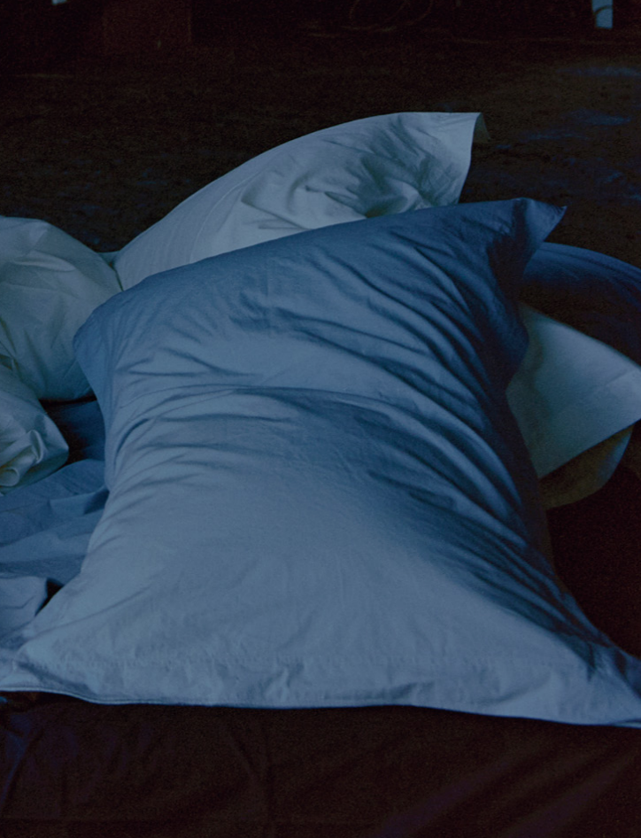
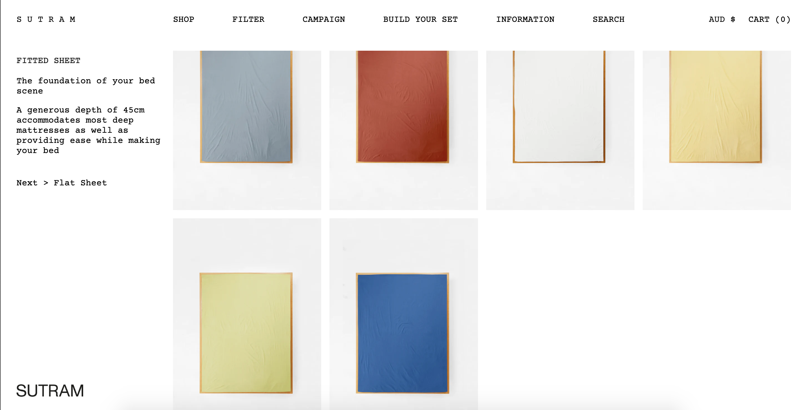
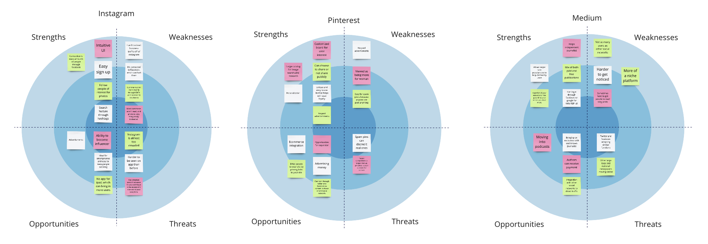
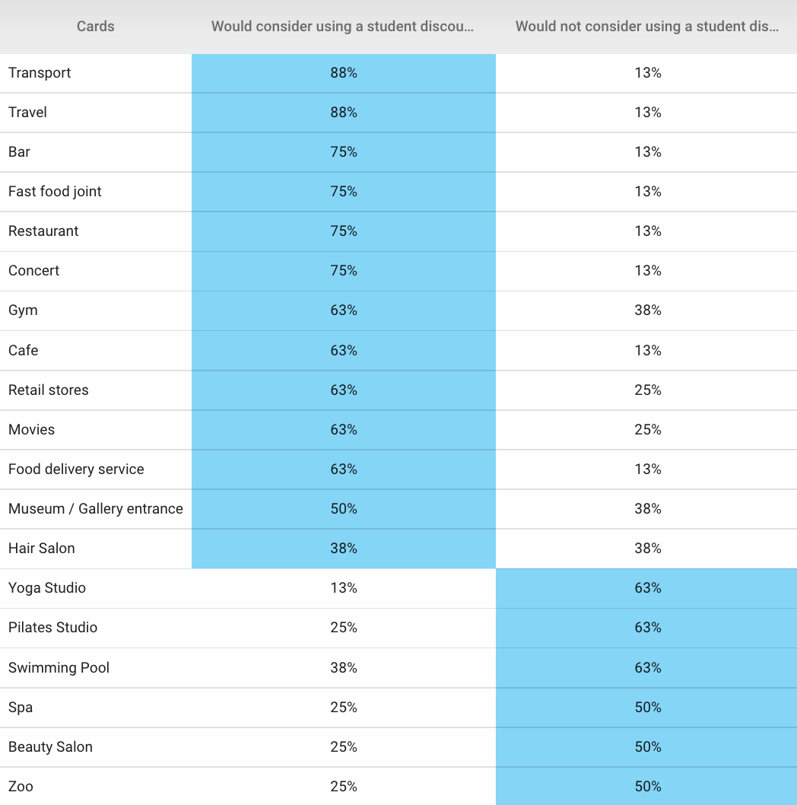
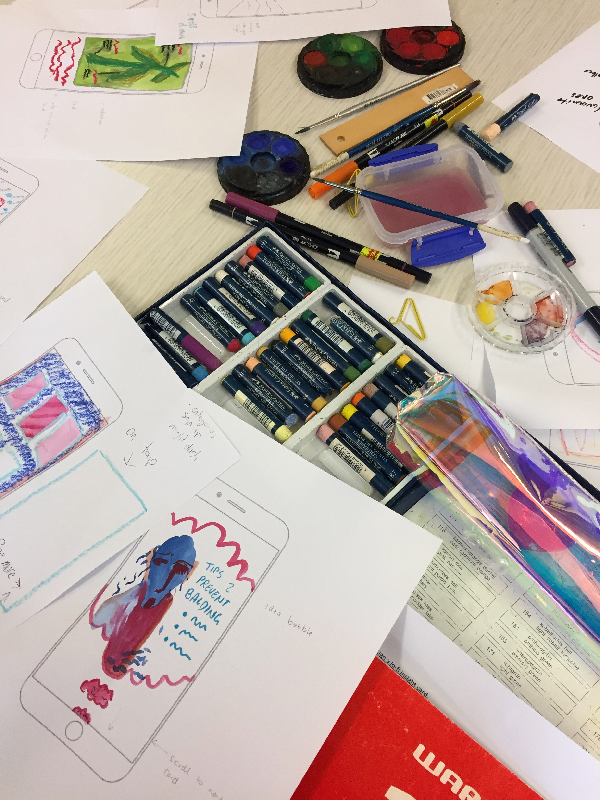
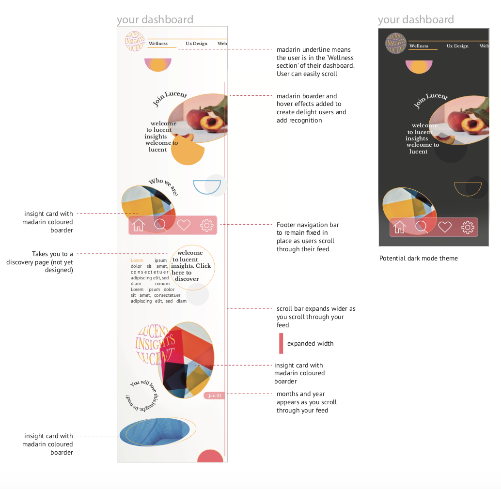
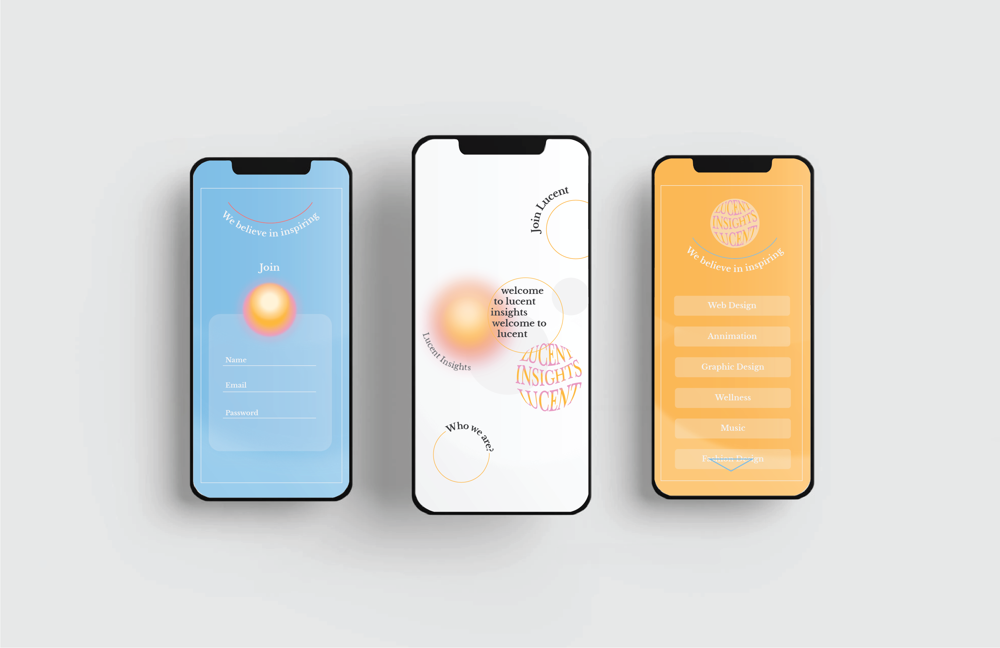

Overview
The goal was to comprehend the fundamentals of UX Design. Use research techniques and incorporate user feedback into a design using an iterative process to develop a web application for mobile as part of a school project.
Problem Statement

Objectives

Mood

Visual identity

Discovery

Competitor research
#Feature This
I asked myself, what sets Lucent apart from everyone else, and what are some features and components that competitors use that could potentially be used in Lucent's application. Using SWOT diagrams I compared the strengths, weaknesses, opportunities, and threats of three main competitors.
Competitor research
#Navigation
I looked into the sign-up user flow for three main competitors. These competitors are in the business of sharing free information and inspiration. The aim is to analyze their navigation flow and gain formative insights that I could use to build Lucent’s sign-up flow.
I focus on:
- - Visibility of System Status
- - Match between Systems and the Real World
- - Consistency and Standards
- - Flexibility and Efficiency of Use
Card sort
#Content Delivery
Card sorting was useful for gaining quantitive data to understand which type of content inspires the target user.
Co-creation workshop
#Inspire Me #Visual Appeal #Content Delivery
I planned to share targeted content with the users to spark ideas and bring about inspiration. I didn’t know how best to present this content to the user so I decided to hold a co-creation workshop with a group of target users to obtain qualitative data. It allowed me to find a content delivery solution which was to present the information in dynamic cards. I also used the opportunity with the group, to find out what type of content inspires them.
Research interviews
#Visual Appeal #Feature This #Navigation
To wrap up my research, I held research interviews to delve deeper into my target user's thoughts, gaining rich qualitative data. I discovered their thoughts on certain features, navigation, and what visually appeals to them online.
I kept the number of questions short but asked the interviewees to elaborate on their answers. I asked them to take out their phones to show examples of websites and apps that they found visually appealing. I pressed them to talk about navigation flow and how they felt emotionally when using their favorite websites.
Result and solution

Throughout the research process, I collected data that was categorized into common themes. The themes kept growing as more research was conducted. Once there were enough themes that linked back to each objective, I was able to establish informed insights and summarize key ideas thus creating a prototype.
